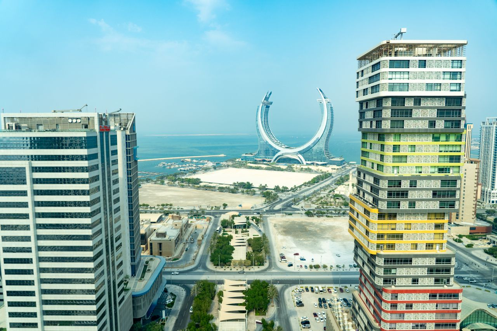
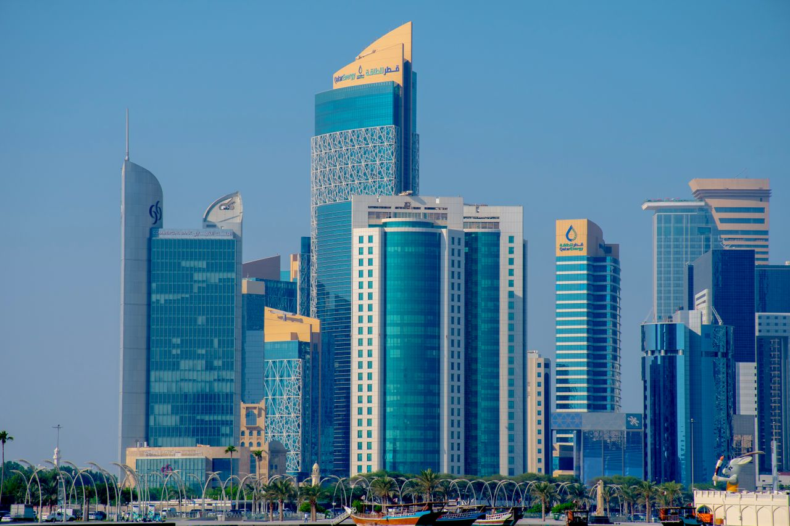
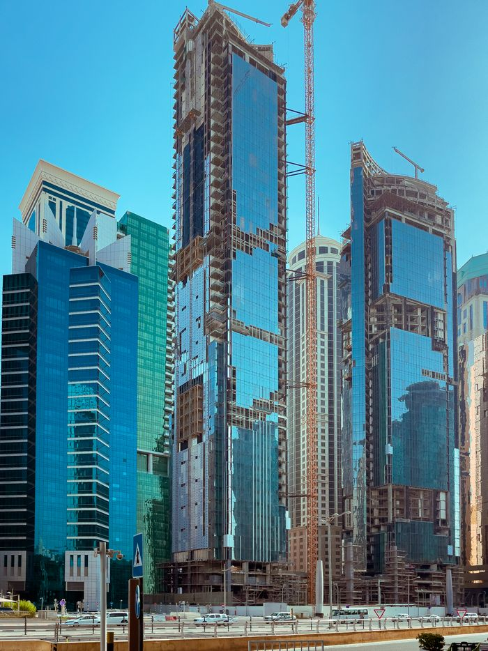

Naviron specializes in civil construction projects, delivering high-quality buildings and infrastructures that meet rigorous safety and quality standards, ensuring durability and functionality for diverse client needs.
From foundations to architectural finishes, our engineering teams employ cutting-edge structural methodologies to construct resilient environments that stand the test of time.
Request ConsultationOur infrastructure maintenance services are tailored to prolong the lifespan and efficiency of essential facilities, combining expert assessments with state-of-the-art technologies to ensure reliable performance and safety.
We provide preventative maintenance schedules, facility health monitoring, and immediate response repairs to protect capital investments and ensure seamless continuity.
Request Maintenance
We provide comprehensive project support services, including planning, management, and execution, ensuring that every aspect of your project is handled with precision, efficiency, and dedication to excellence.
Our project management specialists bring deep logistical expertise, agile scheduling, procurement coordination, and quality assurance to every milestone.
Consult Our Team
Naviron offers specialized trading solutions that encompass a variety of high-quality materials and equipment, ensuring our customers have access to the best products tailored for their unique project requirements.
Leveraging reliable international supply chains and local inventory, we supply compliant, certified building materials and machinery with swift turnaround times.
Inquire About Materials